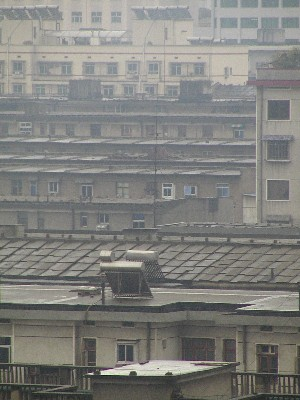
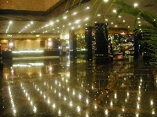

| See also:
|

Due to the tight schedule of the business trip, I didn't took much photos during the trip. Actually, the only places I stayed in Chang Shai is the Huang Tian Hotel and the Hu Nan Province Government. I didn't go to any other places in Chang Sha including the famous Ju Zi Zhou.I only took this, my impression of Chang Sha. It is token from the hotel, looking at the residential houses. This scene is very typical in China - the gray 4 to 6-story residential house just spread to every city in China like virus. There is NO roof! Thus the city looks gray and ugly.

The lobby of Huan Tian Hotel.
Since the time spent in Hotel is driving me mad. Fortunately I have a digital camera at that time and took some photo about myself.
There is a news report for this trip at news center: Business travel to Changsha.
© Copyright 2002 Jian Shuo Wang. All right reserved.